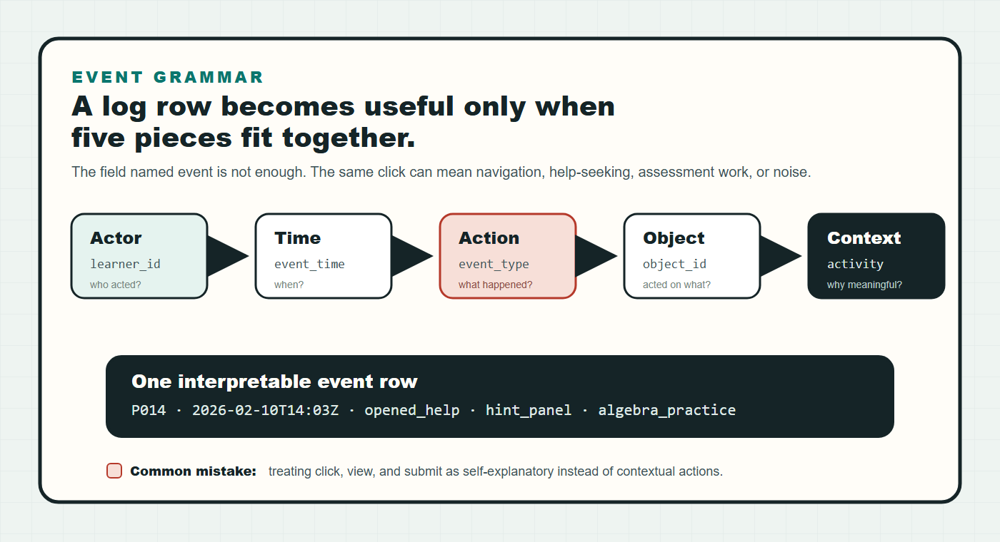

From classroom logs to research-ready learning analytics data
A practical guide for turning LMS clicks, assessment attempts, discussion posts, video events, and simulation traces into privacy-safe datasets that can support sequence mining, ONA/ENA, knowledge tracing, dashboards, and reviewer-safe educational research claims.
Research-ready data needs a stable event grammar, defensible privacy treatment, documented transformations, and a clear match between the research question and the analytic table.
A collaborator should be able to inspect the dataset and know who acted, when, what action occurred, what object was involved, what was derived, and what claims the table can and cannot support.
Start with the dataset the analysis actually needs.
Learning analytics often starts with messy exports: one LMS CSV, one gradebook, a discussion scrape, a video log, and a simulation trace that use different identifiers and timestamp conventions. The first research task is not modeling. It is deciding what the record means.
Platform-specific rows. Useful as evidence, but usually not yet interpretable across systems or analysis methods.
One row per meaningful event with pseudonymous learner, time, action, object, context, and documented derived fields.
Reshaped for the target method: sequences, code co-occurrences, skill attempts, weekly aggregates, or temporally honest prediction rows.
The minimum grammar: actor, time, action, object, context.

A field named event is not enough. click, view, and submit mean different things depending on the object, activity, interface affordance, and course design.
Classroom logs arrive with different units of meaning.
Navigation, submissions, page views, module completion, grades. Strong for participation timing, weak for cognitive intent.
Attempts, items, skills, correctness, score, retries. Strong for KT and practice models when skill mapping is credible.
Posts, replies, timestamps, thread structure, text features. Treat raw text as sensitive; public examples should use derived or synthetic features.
Play, pause, seek, watch percentage. Useful, but idle tabs and background playback can distort engagement claims.
Tool use, decisions, states, scores, traces. Excellent for process analytics when event grammar is designed before deployment.
Background, consent, grouping, outcomes. Keep identifiers separated and merge with pseudonymous keys.
De-identification is a process, not a filename.
Before analysis or publication, decide which copy of the data you are handling. Raw private data, internal limited data, de-identified analysis data, and synthetic public examples should not be mixed.
For U.S. education records, the relevant legal and institutional interpretation usually runs through FERPA plus IRB, consent, and data-use agreements. The U.S. Department of Education's FERPA guidance emphasizes that de-identification depends on reasonable re-identification risk, not just removal of names.
A practical transformation path.
Pick the table that matches the research question.
This table is a fast routing layer, not the full data contract. Use it to choose the first derived table to build, then jump to the full method-table matrix for fields, metrics, and safer claim language.
Build this table first. The research question naturally matches the unit, ordering, and evidence type of that method family.
Useful as a secondary table, feature source, triangulation layer, or mechanism evidence. Check assumptions before centering it.
Usually a mismatch. You may still use the data for context, but the method should not carry the main claim.
Keep one general event table, then derive method tables.
The general event table is the durable middle layer. It should stay broad enough to preserve learning activity across systems, but disciplined enough that every downstream table can be reproduced. The table below is the practical map: each method family starts from the same event grammar, then changes the unit of analysis, required fields, derived metrics, and claim language.
| Field | Meaning | Why it matters |
|---|---|---|
| learner_id | Pseudonymous learner key. | Connects actions over time without exposing identity. |
| event_time | Parseable timestamp with timezone when available. | Required for temporal order, lag features, and train/test integrity. |
| event_type | Controlled action label. | Lets multiple platforms share one analysis vocabulary. |
| object_id | The resource, item, tool, post, or page acted on. | Prevents vague clickstream interpretation. |
| activity_id | Instructional context. | Connects behavior to design, condition, or module. |
| privacy_tier | Raw private, limited, deidentified, or synthetic. | Keeps public examples and private research data separated. |
Learning-sciences method table matrix
| Method family | Derived unit | Minimum fields | Typical metrics | Safe claim language |
|---|---|---|---|---|
| Descriptive LA / dashboards | Learner-week, activity, course module, or group summary. | learner_id, week, activity_id, event counts, duration, completion, outcome. |
Activity counts, active days, completion rate, time-on-task proxy, submission timing, resource coverage. | Describe participation and platform use; do not equate clicks with engagement without validation. |
| Sequence mining / TNA / LSA / SPM / HMM | Ordered event tokens within learner, session, group, or task episode. | unit_id, event_index, token, timestamp, optional group/outcome. |
Transition probabilities, frequent subsequences, sequence distances, state paths, entropy, dwell time, path prevalence. | Compare pathways, routines, and temporal patterns; avoid claiming mental states from order alone. |
| Process mining | Case trace, usually one learner-task, group-project, or assignment workflow. | case_id, activity, timestamp, lifecycle marker, resource/actor when available. |
Process model, conformance, bottlenecks, variants, throughput time, rework loops. | Characterize workflow structure and deviations; do not assume all off-model paths are poor learning. |
| ONA / ENA / epistemic networks | Codes nested in stanzas, conversations, design episodes, or learner units. | unit_id, stanza_id, code, group, optional time/order. |
Code co-occurrence edges, network centroid, group separation, edge differences, node strength. | Compare configurations of coded behaviors or ideas; keep coding scheme and stanza logic explicit. |
| Social network analysis | Actor-actor, actor-resource, reply, mention, collaboration, or help-seeking edge. | source_id, target_id, edge_type, weight, time_window. |
Degree, centrality, density, reciprocity, modularity, brokerage, isolates, community structure. | Describe interaction structure and position; avoid treating centrality as learning quality by itself. |
| Discourse / content analysis | Utterance, post, turn, message, segment, or coded excerpt. | text_unit_id, speaker_id, thread_id, timestamp, code labels or features. |
Code frequencies, uptake, reply depth, stance, argument moves, cognitive presence, inter-rater reliability. | Make interpretive claims grounded in coding rules; protect raw student text in public artifacts. |
| NLP / text mining / topic modeling | Document, post, sentence, turn, abstract, reflection, or response. | doc_id, cleaned text or private text pointer, metadata, timestamp, model version, feature set. |
Embeddings, topics, keywords, sentiment/stance, semantic similarity, classifier scores, uncertainty. | Treat model outputs as features or annotations; validate labels before using them as constructs. |
| Knowledge tracing / mastery modeling | Learner-skill attempt sequence. | learner_id, skill_id, attempt_order, correct, optional hint/time/item. |
Mastery probability, learning rate, slip/guess, next-response accuracy, AUC, calibration. | Estimate evolving performance or mastery proxies; require credible skill mapping and attempt order. |
| IRT / Rasch / CDM / psychometrics | Learner-item response matrix, often cross-sectional or test-session based. | learner_id, item_id, response/correct, item metadata, skill/Q-matrix for CDM. |
Ability, item difficulty, discrimination, fit, reliability, mastery class, DIF, Q-matrix diagnostics. | Make measurement claims about ability, item quality, or diagnostic mastery; separate from process claims. |
| Predictive modeling / EDM | Learner-time window, learner-course, attempt, or future-outcome prediction row. | Feature window before target time, target outcome, split indicator, learner/course metadata. | AUC, F1, precision/recall, calibration, feature importance, SHAP-style explanations, fairness checks. | Predict risk or outcomes under a specified split; do not imply intervention effectiveness. |
| Causal / quasi-experimental | Learner, class, school, section, or time-period treatment unit. | Treatment/condition, pretest/covariates, outcome, assignment mechanism, clustering, timing. | ATE/CATE, regression coefficient, propensity balance, DiD estimate, RD estimate, confidence/credible interval. | Use causal language only when design assumptions are defensible and stated. |
| Multilevel / longitudinal modeling | Repeated measures nested in learners, groups, classes, instructors, or schools. | learner_id, time point, outcome, predictors, nesting IDs, condition/covariates. |
Growth rate, random effects, ICC, cross-level interaction, variance components, time-varying effects. | Estimate change and nested variation; do not flatten repeated observations as independent rows. |
| SEM / path / mediation | Learner-level scale scores, latent variables, or longitudinal constructs. | Validated indicators, scale scores, time order, sample size, missing-data plan, covariates. | Factor loadings, fit indices, path coefficients, indirect effects, reliability, measurement invariance. | Model construct relationships; avoid strong causal mediation without design support. |
| Qualitative case / trace ethnography | Case, episode, artifact, interview, observation, or thick-description memo. | Case ID, source type, timestamp/context, excerpt pointer, analytic memo, code trail. | Themes, episodes, negative cases, triangulation matrix, analytic memos, trustworthiness evidence. | Explain situated meaning and mechanism hypotheses; do not oversell generalizability. |
| Video / sensor / multimodal analytics | Time-windowed signal, frame segment, behavior episode, utterance, or fused event. | Participant ID, timestamp, modality, segment label, confidence, synchronization key, privacy tier. | Behavior frequency, duration, multimodal alignment, affect proxy, classifier F1, latency, state transitions. | Report inferred signals with model uncertainty and validation; treat biometrics and video as high-risk data. |
| Design-based / learning engineering analytics | Design conjecture, feature version, iteration, class cycle, or implementation episode. | Version, design change, intended mechanism, evidence source, outcome/process indicators, memo. | Iteration deltas, implementation fidelity, conjecture-evidence alignment, usability issues, redesign triggers. | Connect evidence to design refinement; frame as iterative learning, not one-shot proof. |
Use when order and context matter: sequence mining, TNA, LSA, process mining, KT, predictive modeling, and multimodal state detection.
Use when the core evidence is relation or co-occurrence: ONA, ENA, SNA, discourse coding, epistemic networks, and collaboration analysis.
Use when claims involve latent constructs or treatment effects: psychometrics, SEM, multilevel models, causal inference, and design-based iteration evidence.
Chart the data in ways that preserve comparison.
The chart should match both the data structure and the comparison target. For learning analytics, the common mistake is to show one attractive flow or network without a common scale, baseline, or grouping logic. Cross-comparison usually needs aligned axes, repeated panels, shared node positions, shared edge scales, or normalized transition weights.
Visualization decision matrix
| Data / method table | Best chart types | Cross-comparison design | What to show beside the chart | Common mistake |
|---|---|---|---|---|
| Event / dashboard summaries | Aligned bar charts, calendar heatmaps, line charts, dot plots, completion funnels. | Same time window and denominator across groups; show per-learner and aggregate views separately. | Raw N, active learner count, missing logging days, course/module boundaries. | Comparing raw click counts when group size or course length differs. |
| Sequence mining / TNA / SPM | Sankey/alluvial, transition heatmap, state sequence plot, frequent-pattern bar chart, Markov edge diagram. | Use identical token vocabulary and stage boundaries; normalize transition weights within group. | Sequence count, median length, top-k path coverage, entropy or path diversity. | Showing one beautiful Sankey without proving that groups share comparable event grammar. |
| Process mining | Process map, variant explorer, conformance heatmap, throughput boxplot, bottleneck timeline. | Fix the same case definition; compare variants by percentage and median time, not only absolute counts. | Number of cases, variant coverage threshold, excluded rare paths, duration distribution. | Treating the "ideal" workflow as pedagogically best without design evidence. |
| ONA / ENA / epistemic networks | Network panels, edge-difference plot, centroid scatter, node-strength lollipop, adjacency heatmap. | Use shared node positions, shared edge-width scale, and matched unit/stanza definitions. | Unit count, stanza rule, coding reliability, edge normalization method. | Moving nodes independently by group, which makes visual differences look larger than they are. |
| Social network analysis | Network small multiples, adjacency matrix, degree distribution, centrality dot plot, community map. | Use same edge threshold and layout seed; compare graph metrics with uncertainty or permutation baseline. | Density, isolates, reciprocity, edge definition, observation window. | Calling central students "better learners" without outcome or qualitative support. |
| Discourse / content analysis | Stacked bars, code co-occurrence heatmap, uptake arcs, timeline of moves, quote-linked code matrix. | Use the same codebook and unitization; compare proportions plus raw counts. | Coder agreement, examples of coded units, denominator, excluded private text policy. | Comparing percentages without showing that one group produced far fewer words or turns. |
| NLP / topic modeling | Topic prevalence bars, embedding map, similarity heatmap, classifier calibration, uncertainty intervals. | Keep model version fixed; compare topic prevalence with confidence or bootstrap intervals. | Prompt/model version, validation sample, label accuracy, representative examples. | Treating model-generated labels as ground truth. |
| Knowledge tracing / mastery | Mastery trajectory, learning curve, item-skill heatmap, calibration curve, attempt-level spaghetti + summary. | Align by attempt number or instructional time; compare with shared skill map and item pool. | Skill mapping, item count per skill, model fit, calibration, uncertainty bands. | Plotting smooth mastery curves without enough attempts per learner/skill. |
| IRT / Rasch / CDM | Item-person map, Wright map, item characteristic curves, Q-matrix heatmap, mastery profile bars. | Use same item scale and check measurement invariance before group comparison. | Reliability, fit statistics, item count, DIF/invariance notes, Q-matrix source. | Comparing raw scores when item difficulty differs. |
| Prediction / EDM | ROC/PR curves, calibration plot, confusion matrix, lift chart, feature importance with stability. | Use identical train/test split logic; compare models by held-out performance and calibration. | Base rate, threshold, false-positive cost, split method, subgroup performance. | Reporting AUC only when the operational decision depends on precision/recall or calibration. |
| Causal / longitudinal / multilevel | Coefficient plot, event-study plot, growth curves, marginal effects, forest plot, balance Love plot. | Use shared covariate adjustment and clustering; compare effects with intervals, not just p-values. | Assignment mechanism, covariate balance, ICC, cluster count, robustness checks. | Using before/after line charts as if they prove treatment effects. |
| Multimodal / video / sensor | Timeline raster, state-transition Sankey, synchronized signal panels, behavior-duration bars, confusion matrix. | Synchronize clocks and use shared behavior codes; compare rates per minute and uncertainty. | Classifier F1, human-coding baseline, sensor missingness, segment definition, privacy tier. | Showing high-resolution traces without validation of the inferred behavior labels. |
| DBR / learning engineering | Iteration timeline, conjecture map, design-change matrix, before/after small multiples, evidence dashboard. | Compare versions by the same mechanism indicators, not only final outcomes. | Design change log, intended mechanism, implementation fidelity, sample/context shift. | Claiming "the redesign worked" without separating design changes from cohort/context differences. |
Use Sankey/alluvial charts for ordered stage-to-stage flow. Normalize within group when comparing groups, and show raw path counts nearby.
When comparing groups, keep axes, node positions, color mapping, and aggregation windows fixed across panels.
Every chart should make the denominator visible: learners, sessions, events, turns, attempts, or cases.
Try the fit logic before you clean data.
Write down what the logs cannot prove.
"Students who clicked more were more engaged and learned more."
"In this platform log, higher resource-access frequency was associated with later assessment performance. We interpret this as a behavioral trace of platform use, not a direct measure of engagement."
- Logging gaps: document missing mobile events, offline work, background tabs, and platform changes.
- Construct validity: explain why event types are reasonable proxies for the construct.
- Temporal leakage: do not use future events to predict earlier outcomes.
- Causal wording: use causal language only when the study design supports it.
Questions that usually appear in the first week.
Can I just merge the LMS export with grades and start modeling?
No. First inspect identifiers, timestamps, duplicated events, missingness, and whether each event means the same thing across modules. A model can run on a bad merge and still produce polished nonsense.
Should I keep raw discussion text?
For private analysis, maybe, if the study protocol allows it. For public examples, avoid raw student text. Use synthetic text, derived features, or aggregate code labels.
What is the difference between de-identified and synthetic?
De-identified data began as real participant data and has been transformed to reduce re-identification risk. Synthetic data is generated for illustration and should not be described as real evidence.
When should I move from event tables to KT or sequence mining?
Move only after the target unit is clear. KT needs attempts mapped to skills. Sequence mining needs ordered tokens. ONA/ENA needs interpretable codes within units or stanzas.
Public-safe starter files.
Primary and official sources to keep nearby.
- 1EdTech Caliper Analytics: official event model specification for learning activity data. 1EdTech Caliper Analytics
- ADL xAPI: official Experience API specification using actor, verb, and object statements. ADL xAPI
- U.S. Department of Education FERPA guidance: official privacy guidance for education records and de-identification. Student Privacy Policy Office
- Society for Learning Analytics Research: field-level learning analytics community and conference context. SoLAR
- What Works Clearinghouse: useful contrast for evidence standards and causal claim discipline in education research. WWC Handbooks